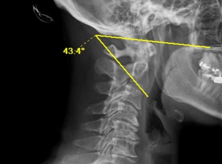

1) Description of Measurement
The Occiput C2 angle (OC2 angle) measures the angular relationship between the occiput and the axis (C2 vertebra) on a lateral cervical spine radiograph. It is the primary radiographic parameter used to quantify craniocervical sagittal alignment and is critical for preoperative planning and intraoperative assessment during occipitocervical fusion (OCF).
The OC2 angle is defined as the angle between McGregor’s line (a line connecting the posterior edge of the hard palate to the most caudal point on the midline occipital curve) and a line drawn along the inferior endplate of C2. This measurement reflects the degree of flexion or extension at the craniocervical junction.
The OC2 angle has received significant clinical attention because improper fixation angles during occipitocervical fusion can lead to devastating complications including dysphagia and dyspnea (from mechanical narrowing of the oropharyngeal airway space) as well as subaxial subluxation and loss of lower cervical lordosis over time. Maintaining the postoperative OC2 angle within or near the patient’s preoperative value is essential to avoid these complications.
2) Instructions to Measure
• Obtain a neutral, standing lateral cervical spine X-ray with clear visualization of the occiput, hard palate, and C2 vertebra
• Identify McGregor’s line: draw a straight line from the posterior edge of the hard palate to the most caudal point on the midline occipital curve (the lowest point of the occiput at the foramen magnum)
• Identify the inferior endplate of the C2 vertebra and draw a horizontal line along the inferior aspect.
• Measure the angle formed between McGregor’s line and the inferior endplate line of C2
• A larger (more positive) angle indicates relative extension at the craniocervical junction; a smaller (decreasing) angle indicates relative flexion
• For intraoperative use: the OC2 angle should be measured on preoperative lateral radiographs and then replicated during surgery using intraoperative fluoroscopy to ensure appropriate craniocervical alignment prior to final fixation
3) Normal vs. Pathologic Ranges
• Normal OC2 angle: approximately 14–20° in healthy adults. Matsunaga et al. (2001) reported normal values in 240 volunteers; Sherekar et al. (2006) measured 518 asymptomatic volunteers with mean values of 14.7° ± 9.5° (males) and 15.6° ± 8.3° (females); Tang et al. (2019) measured 150 healthy adults with a mean of 14.5° ± 3.7° (95% CI: 7.2–21.8°)
• No significant sex difference: OC2A values are similar between males and females across multiple studies
• Postoperative decrease > 10° (dOC2A < −10°): Miyata et al. (2009) demonstrated that all patients with a decrease in the OC2 angle of more than 10° from preoperative baseline experienced > 40% reduction in oropharyngeal airway space and developed dyspnea and/or dysphagia
• Postoperative decrease ≥ 5° (dOC2A < −5°): Ota et al. (2018) identified a dOC2A of −5° as the threshold between normal swallowing and dysphagia; patients with dOC2A < −5° had a dysphagia incidence of 66.7% compared to 0% in those with dOC2A ≥ −5°
• Excessive anteversion (flexion): an OC2 angle fixed below the normal range is associated with subaxial subluxation — Matsunaga et al. found 86% of patients with excessive anteversion developed subaxial subluxation after OCF
• Excessive retroversion (extension): an OC2 angle fixed above normal range is associated with postoperative kyphosis and swan-neck deformity
Key Principle: The postoperative OC2 angle should be maintained as close to the patient’s preoperative neutral value as possible. No patient with a positive dOC2A (equal to or greater than preoperative) has been reported to develop dyspnea or dysphagia in the existing literature.
4) Important References
Matsunaga S, Onishi T, Sakou T. Significance of occipitoaxial angle in subaxial lesion after occipitocervical fusion. Spine (Phila Pa 1976). 2001 Jan 15;26(2):161-5. doi: 10.1097/00007632-200101150-00010.
Shoda N, Takeshita K, Seichi A, et al. Measurement of occipitocervical angle. Spine (Phila Pa 1976). 2004 May 15;29(10):E204-8. doi: 10.1097/00007632-200405150-00020.
Miyata M, Neo M, Fujibayashi S, Ito H, Takemoto M, Nakamura T. O-C2 angle as a predictor of dyspnea and/or dysphagia after occipitocervical fusion. Spine (Phila Pa 1976). 2009 Jan 15;34(2):184-8. doi: 10.1097/BRS.0b013e31818ff64e.
Izeki M, Neo M, Takemoto M, et al. The O-C2 angle established at occipito-cervical fusion dictates the patient’s destiny in terms of postoperative dyspnea and/or dysphagia. Eur Spine J. 2014 Feb;23(2):328-336. doi: 10.1007/s00586-013-2963-6.
Ota M, Neo M, Aoyama T, et al. The impact of the difference in O-C2 angle in the development of dysphagia after occipitocervical fusion: a simulation study in normal volunteers combined with a case-control study. Spine J. 2018 Jul;18(7):1138-1145. doi: 10.1016/j.spinee.2017.11.017.
Tang C, Li GZ, Kang M, et al. Importance of the occipitoaxial angle and posterior occipitocervical angle in occipitocervical fusion. Orthop Surg. 2019 Dec;11(6):1054-1063. doi: 10.1111/os.12553.
Tang, Chao MD*; Li, Guang Zhou MD*; Kang, Min MD†; Liao, Ye Hui MD*; Tang, Qiang MD*; Zhong, De Jun MD*. Is it Suitable to Fix the Occipito-C2 Angle and the Posterior Occipitocervical Angle in a Normal Range During Occipitocervical Fusion?. Clinical Spine Surgery 33(7):p E342-E351, August 2020. | DOI: 10.1097/BSD.0000000000000981
Patel VR, Hodges SD, Humphreys SC, Meredith DS. A review of cervical spine alignment in the normal and degenerative spine. J Spine Surg. 2020 Mar;6(1):124-136. doi: 10.21037/jss.2019.10.03.
Bellabarba C, Karim F, Tavolaro C, Zhou H, Bremjit P, Nguyen QT, Agel J, Bransford RJ. The mandible-C2 angle: a new radiographic assessment of occipitocervical alignment. Spine J. 2021 Jan;21(1):105-113. doi: 10.1016/j.spinee.2020.07.003. Epub 2020 Jul 13. PMID: 32673731.
5) Other info….
The OC2 angle is the most widely used parameter for quantifying craniocervical alignment, though McGregor’s line can be difficult to identify on intraoperative fluoroscopy due to poor image quality. Alternative measures such as the Oc-Ax angle (posterior longitudinal line of C2 relative to an occipital reference line) and mandible–C2 angle have been proposed as more easily measurable intraoperative surrogates.
Once the OC2 angle is fixed by occipitocervical fusion, the narrowest oropharyngeal airway space becomes constant regardless of neck position. Izeki et al. (2014) showed that patients with subaxial motion preserved after OCF could no longer dynamically adjust their airway, emphasizing that the angle chosen at surgery permanently determines airway dimensions.
Dysphagia and dyspnea caused by a non-ideal OC2 angle after OCF may not resolve over time and can require revision surgery to correct the occipitocervical alignment.
Consider that excessive correction of the OC2 angle in either direction may drive compensatory changes in the subaxial spine.
In the context of cervical deformity, OC2 angle should be measured in conjunction with other legacy measures such as but not limited to, C2-C7 Cobb Angle, Dynamic motion on flexion and extension, chin-brow angle, and T1 slope for more comprehensive surgical planning.